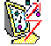

+
®
Software for Windows
Programming Applet Help Contents
DECtalk Software V4.6 New Features
DECtalk Software v4.5 New Features (August 1998)
DECtalk Software v4.4 New Features (End User)
DECtalk Software v4.4 New Features (Programming)
DECtalk Software v4.4 New Features (Reference)
DECtalk Software v4.3 New Features (End User)

Sample
Speak
User Dictionary
Text-to-Speech Services
SAY Command-line
® DECtalk is a registered trademark of Digital Equipment Corporation
® Windows NT is a registered trademark of Microsoft Corporation